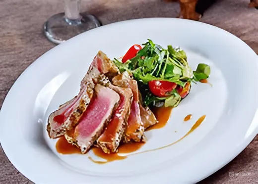
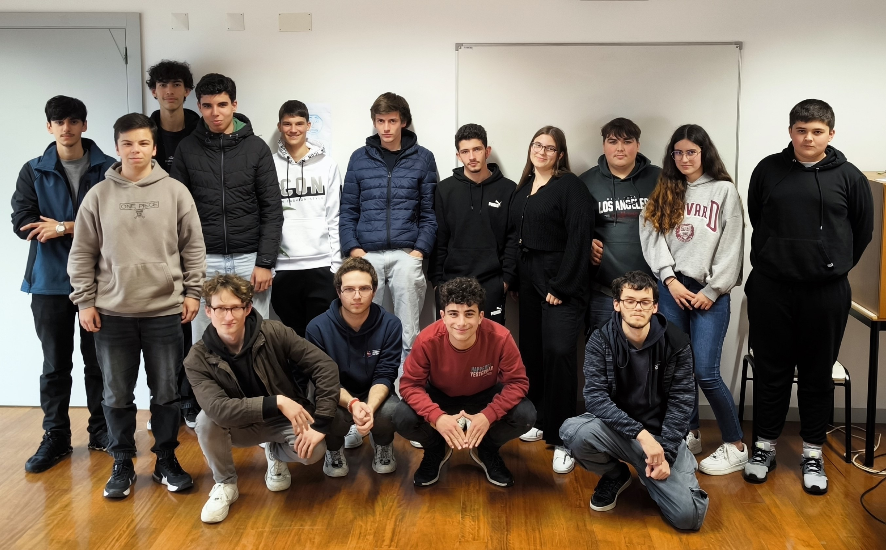

- O projeto envolve a criação de um sítio Web moderno, que é uma plataforma interactiva para a apresentação de receitas culinárias, combinando tecnologias de programação e gastronomia.
- A ideia principal é combinar os esforços dos alunos de dois cursos - "Gestão e Programação de Sistemas Informáticos" e "Técnico de Cozinha/Pastelaria".
- Isto permite-nos não só expandir as nossas competências profissionais, mas também aprender a trabalhar em equipa de forma eficaz num projeto comum.
- O síte contém um catálogo estruturado de receitas, cada uma das quais é apresentada sob a forma de uma descrição com fotografias. Para além da lista tradicional de ingredientes e métodos de cozedura.
- Inclui também o custo aproximado dos ingredientes, o que promove a literacia financeira e a compreensão dos princípios do consumo sustentável.

